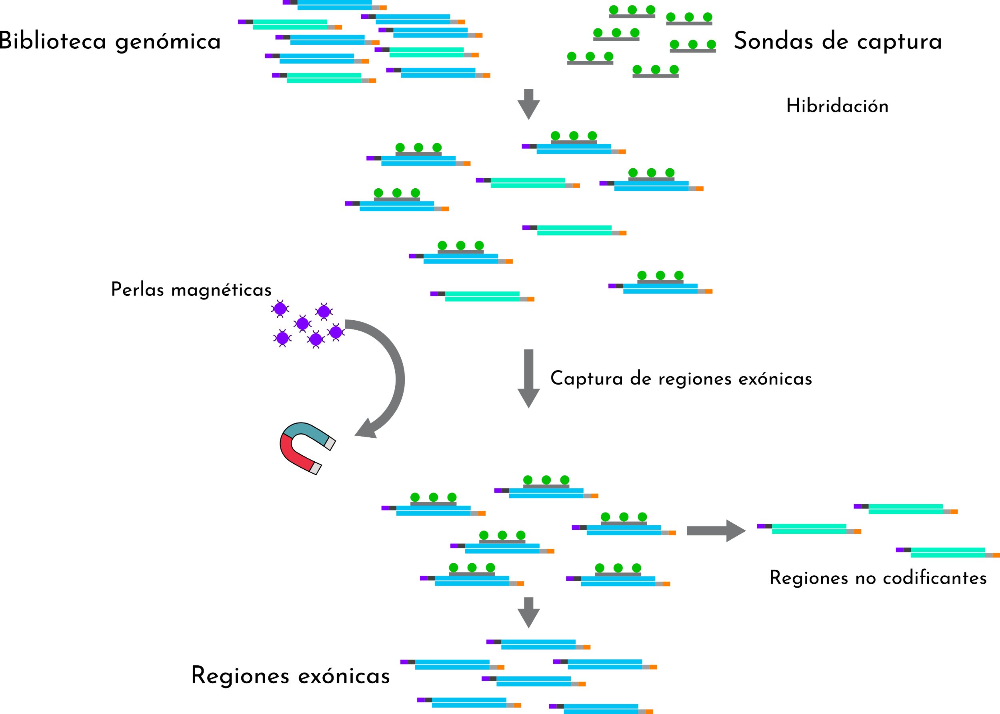
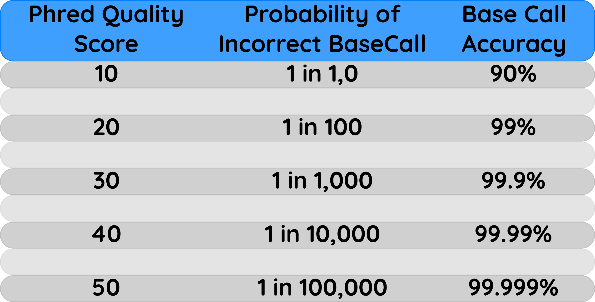
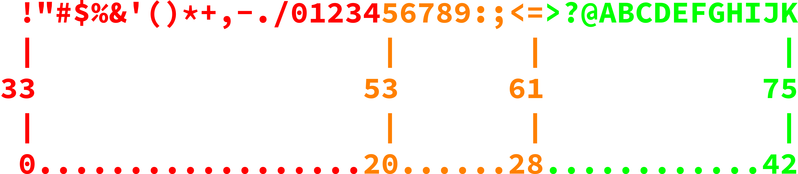

Introducción¶
NGS es un término sombrilla que hace referencia a la última generación de tecnologías de secuenciación
Actualmente hay tres generaciones de tecnologías de secuenciación disponibles de forma comercial
- Primera generación: secuenciación por terminación didesoxi
Secuenciación Sanger en geles de acrilamida
Secuenciación Sanger en capilares
- Segunda generación: secuenciación por síntesis:
Roche 454
Illumina
Applied Biosystems SOLiD
Ion Torren / Ion Proton
- Tercera generación: secuenciación por lectura directa de moléculas
PacBio
Oxford Nanopore

Aspectos generales de la secuenciación masiva¶
Si bien las tecnologías de secuenciación son muy diversas, el principio es fundamentalmente el mismo:
- Se obtiene el DNA genómico de la muestra
El tipo de muestra determina el procedimiento a emplear (kit, consumibles, equipo)
- El DNA genómico es fragmentado de forma semi-aleatoria
Fragmentación mecánica
Fragmentación enzimática
Los kits de secuenciación indican el tamaño de fragmento a obtener, para exoma y genoma éstos van de 300 a 800 bp
- Se ligan adaptadores a ambos lados de los fragmentos generados.
En este momento tenemos bibliotecas genómicas y dependiendo de su concentración pueden estar listas para secuenciar
- Se agregan más oligonucleótidos a ambos lados de los fragmentos generados.
Éste es un paso opcional pero común cuando se procesa más de una muestra por corrida
En caso de no contar con la cantidad adecuada, se amplifican las bibliotecas mediante una reacción de PCR
En este momento tenemos bibliotecas uniplex listas para combinarse y tener bibliotecas multiplex
- La biblioteca multiplex se inmobiliza en una matriz:
Puede ser una superficie en el caso de Illumina, PacBio & Nanopore
Puede ser en perlas como en Ion Proton & 454
- Se secuencian las bibliotecas multiplexeadas en el aparato
La configuración de la corrida es fundamental para obtener el mejor rendimiento de nuestros reactivos, de nuestra muestra y muy importante, de nuestros datos de secuenciación
Truco
Es recomendable secuenciar por ambos lados las bibliotecas, ya que la información de un solo lado de la lectura (75-300 nt) puede perderse en la inmensidad del genoma (3Gbp en el caso de humano) Es recomendable secuenciar fragmentos largos medianamente espaciados (2x150 nt + 200) para maximizar el rendimiento de la corrida, esto lo determina el laboratorio de biología molecular, los Field Application Scientists y los kits de secuenciación

Cómo se obtiene un exoma?¶
Un exoma usualmente se obtiene mediante captura de regiones específicas a través de sondas que hibridan mediante complementaridad de bases en las regiones correspondientes a los exones del organismo que estemos tratando
Importante
Los kits de captura para exomas humanos constan de cientos de miles de sondas que hibridan específicamente con los exones de los >20000 genes codificados en el genoma humano!
Existen otras estrategias como la de amplificación, sin embargo éstas tienen un rendimiento considerablemente inferior al de captura, adicionalmente, pueden ser susceptibles de rearreglos (captura también es sensible a rearreglos, pero no se pierden las variantes presentes en las regiones rearregladas)
Evolución en los costos de secuenciación y comparación de plataformas¶
Esta figura la hemos visto hasta el cansancio, pero… qué significa?

Advertencia
La ley de Moore en realidad es aplicable a poder de cómputo vs costo vs tiempo. No obstante la genómica y la bioinformática van de la mano, de modo que si bien no es directamente aplicable, si podemos extrapolar la ley de Moore con respecto al costo esperado de la secuenciación de genomas.
Esta imagen esencialmente nos indica que ahora es más fácil secuenciar genomas completos, y eso es tambien un aliciente para implementar metodologías de genoma o exoma completos por encima de las opciones de paneles específicos
Y el rendimiento?
No todas las plataformas entregan el mismo rendimiento, incluso si son baratas, por lo que es importante no solamente elegir el kit adecuado para obtener exomas o paneles específicos. Las distintas plataformas nos van a entregar throughputs diferentes, incluso dentro de la misma plataforma en diferentes versiones, la salida de los secuenciadores puede ser muy muy variada
Truco
Para secuenciación masiva de genoma y de exoma, actualmente puede usarse Illumina, Ion Proton, PacBio o Nanopore, no obstante Illumina tiene ventajas notables sobre las demás plataformas:
No es tan susceptible a errores en regiones homopoliméricas
Tiene el throughput más alto de todas las tecnologías
Tiene la relación más alta en costo beneficio en cuanto a costo por base secuenciada
Tiene mayor número de certificaciones en aplicaciones clínicas y de investigación
Advertencia
Pese a sus ventajas, Illumina tiene deficiencias a nivel de detección de variaciones estructurales:
No permite la detección de rearreglos (la opción es Nanopore y PacBio)
No permite la detección de expansiones con la resolución adecuada (Nanopore > PacBio > Ion Proton si pueden realizar esta tarea)
No permite la resolución de regiones repetitivas (Nanopore y PacBio son la mejor opción)
Por lo anterior nos concentraremos en la tecnología Illumina para el llamado de variantes
Secuenciación Illumina¶
Importante
Illumina es por mucho la principal plataforma de secuenciación masiva, no obstante las tecnologías de tercera generación pronto competirán con Illumina tanto en la clínica como en la investigación y en otras áreas en donde se apliquen estrategias de secuenciación
Cúal es la química en la secuenciación Illumina?

En la secuenciación illumina, cada fragmento se lee dos veces (una vez en foward y una más en reverse), en cada incorporación de nucleótidos, se llevan a cabo los siguientes pasos:
Se incorpora un nucleótido marcado con un fluoróforo específico
Se detiene transitoriamente la reacción
Se excitan los fluoróforos presentes en los nucleótidos incorporados
Se lee la emisión de luz correspondiente a cada nucleótido
Las intensidades de cada spot son registradas y transformadas en secuencias de nucleótidos
Nota
La intensidad de los spots estará intimamente ligada a la capacidad del detector de separar señales ruidosas y en consecuencia de entregarnos secuencias de calidad.
Calidad de la secuenciación¶
El detector de los secuenciadores Illumina es esencialmente una cámara muy grande (muy (seriously, muy)). Cómo hace para discriminar entre una señal ruidosa de una señal real?
Importante
Estas son imagenes reales de reacciones de secuenciación
La calidad de una reacción de secuenciación está en función de la capacidad del aparato de separar el ruido de una señal ruidosa.
Un poco de historia para entender la calidad de las secuencias

Cuando hacemos secuenciación Sanger podemos distinguir facilmente cuando una secuencia es de mala calidad porque los picos se traslapan con la señal basal de la fluorescencia de los demás nucleótidos
Nota
En secuenciación masiva ocurre similar pero lo podemos ver de una forma numérica
Incorporemos ahora nuestros Phred scores en una secuenciación tradicional
|
|


Nota
Recordemos que en cómputo, cada caracter de un string pesa ~1 byte
Cuando incorporamos los phred scores en un archivo, éste pesará por lo menos el doble si se trata de secuencias de baja calidad, y podría pesar hasta el triple cuando son secuencias de alta calidad
Puedes identificar por qué?
Advertencia
Esto no parece ser muy problemático, si partimos de lo anterior, una secuencia de 1000 nucleótidos no excederá 1 Kb y con calidades incluidas no excederá 3 Kb
Importante
Pero en secuenciación masiva tenemos millones de secuencias! Entonces el tamaño si importa.
Solución al problema de codificar los phred scores en NGS
El código ASCII es una implementación internacional que codifica caracteres alfanuméricos en una estructura controlada, cada letra tiene un identificador único y es valido internacionalmente.
Y esto cómo conecta con la calidad?
Dado que cada caracter (1 byte) tiene un código numérico (llegando incluso a más de 100), podemos codificar números que midan 2 bytes, en caracteres que midan unicamente 1 byte
Importante
Sabiendo lo anterior, nuestro cromatograma lo podemos representar de la siguiente manera
|
|

{kind=link}
{kind=link}
{kind=link}
{kind=link}
{kind=link}
Y ahora en secuenciación masiva!

Considerando que ya conocemos las equivalencias del código ASCII con la escala Phred, qué podrías decir de las secuencias anteriores?
Son de buena calidad?
Son de mala calidad?
Solución
Existen distintos *offsets* de la escala Phred!
Es indispensable que consultes con tu centro de secuenciación cual es el offset en la escala Phred de tu reacción de secuenciación!

Y entonces tenemos fastq!
El formato fastq es sumamente rico, ya que además de la secuencia, tenemos información de la calidad de la secuencia y más, mucho más

FastQC¶
Para nosotros poder examinar la calidad de nuestras secuencias, podemos medir directamente sus calidades en formato fastq, y para ello usaremos la aplicación FastQC.
Es una aplicación escrita en Java que permite portabilidad, es decir, puede correr en Windows, Linux y OSX
Cuenta con interfáz gráfica y también en línea de comandos
Entrega reportes a manera de páginas web
Sabiendo lo anterior, tomamos nuestra terminal, nos vamos a la carpeta del día 2 y ejecutamos FastQC
Importante
- En la carpeta del día 2, encontrarás archivos de secuenciación correspondientes al proyecto "NextSeq 550: Nextera Flex for Enrichment (12-plex, NA12878) with TruSight One Expanded Panel" Albergado en Basespace
24 replicates of Coriell NA12878 were prepared using the Nextera Flex for Enrichment with TruSight One Expanded in 12-plex hybridizations with IDT for Illumina- Nextera UD Indexes, sequenced at 2x149 on NextSeq. Analysis was performed using the BaseSpace Enrichment app.
$ ls
dia_01 dia_02 dia_03
$ cd dia_02
$ ls -lh
total 648M
-rwxrwxr-x 1 vflorelo bioinformatics 81M Sep 22 06:19 NA12878-TS1Exp-TiVAL3-rep5_S20_L001_R1_001.fastq.gz
-rwxrwxr-x 1 vflorelo bioinformatics 82M Sep 22 06:19 NA12878-TS1Exp-TiVAL3-rep5_S20_L001_R2_001.fastq.gz
-rwxrwxr-x 1 vflorelo bioinformatics 80M Sep 22 06:19 NA12878-TS1Exp-TiVAL3-rep5_S20_L002_R1_001.fastq.gz
-rwxrwxr-x 1 vflorelo bioinformatics 81M Sep 22 06:19 NA12878-TS1Exp-TiVAL3-rep5_S20_L002_R2_001.fastq.gz
-rwxrwxr-x 1 vflorelo bioinformatics 81M Sep 22 06:19 NA12878-TS1Exp-TiVAL3-rep5_S20_L003_R1_001.fastq.gz
-rwxrwxr-x 1 vflorelo bioinformatics 82M Sep 22 06:19 NA12878-TS1Exp-TiVAL3-rep5_S20_L003_R2_001.fastq.gz
-rwxrwxr-x 1 vflorelo bioinformatics 80M Sep 22 06:19 NA12878-TS1Exp-TiVAL3-rep5_S20_L004_R1_001.fastq.gz
-rwxrwxr-x 1 vflorelo bioinformatics 82M Sep 22 06:19 NA12878-TS1Exp-TiVAL3-rep5_S20_L004_R2_001.fastq.gz
$ file NA12878-TS1Exp-TiVAL3-rep5_S20_L001_R1_001.fastq.gz
NA12878-TS1Exp-TiVAL3-rep5_S20_L001_R1_001.fastq.gz: gzip compressed data, was "NA12878-TS1Exp-TiVAL3-rep5_S20_L001_R1_001.fastq", last modified: Sun Sep 20 21:12:05 2020, max compression, from Unix
$ fastqc *.gz